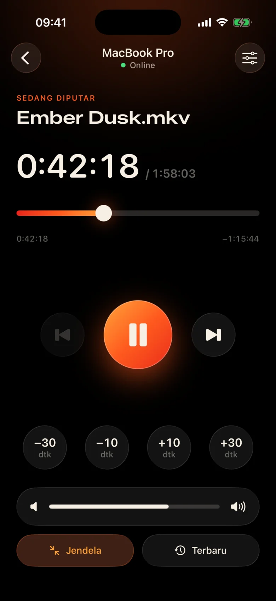
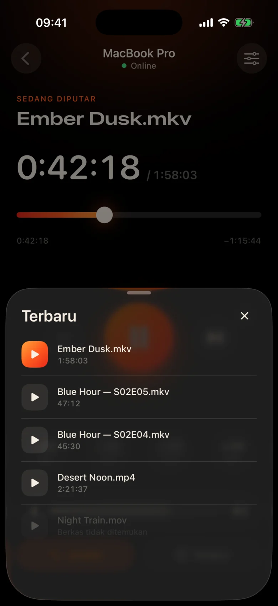
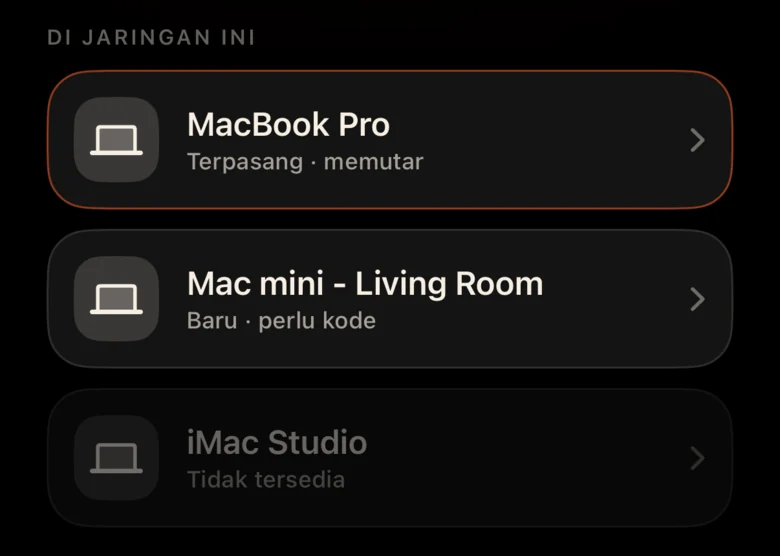
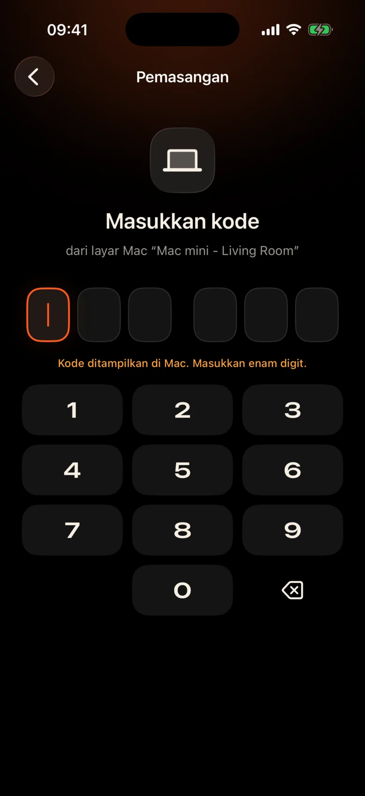

Mac ada di seberang ruangan
Itu dicolokkan ke proyektor di dekat dinding. Setiap jeda berarti bangun, menemukan trackpad dalam kegelapan, dan menyipitkan mata ke bilah kontrol kecil.
Kinrox: ketuk jeda pada ponsel di tangan Anda.
Kinrox memutar video apa pun di Mac Anda — dan mengubah iPhone Anda menjadi remote. MacBook di proyektor, Anda di sofa: jeda, mundur 10 detik, kecilkan volume, atau mulai episode berikutnya tanpa meninggalkan selimut.


Itu dicolokkan ke proyektor di dekat dinding. Setiap jeda berarti bangun, menemukan trackpad dalam kegelapan, dan menyipitkan mata ke bilah kontrol kecil.
Kinrox: ketuk jeda pada ponsel di tangan Anda.
Berbisik di satu adegan, ledakan di adegan berikutnya — dan seseorang sudah tertidur di kamar sebelah.
Kinrox: penggeser volume tepat di bawah ibu jari Anda.
Panel web dengan alamat IP dan kata sandi, tab browser yang tertidur, tombol yang dibuat untuk meja — bukan untuk sofa.
Kinrox: menemukan Mac Anda sendiri, berpasangan dengan satu kode.

Target besar, tema gelap hangat, dan sentuhan haptik ringan di setiap tekanan. Anda dapat menggunakannya tanpa mengalihkan pandangan dari film.
Setiap tombol cukup besar untuk disentuh meski setengah mengantuk.
Melewatkan satu baris? Satu ketukan kembali. Lewati intro dengan dua.
Volume Kinrox sendiri, dari 0 hingga 100. Volume sistem Mac tetap tidak tersentuh.
File sebelumnya dan berikutnya dari folder yang sama, dalam urutan Finder.
Pilih sesuatu yang Anda tonton sebelumnya — itu akan terbuka di Mac.
Seret garis waktu ke momen apa pun, alihkan ke layar penuh dari sofa.
Tidak ada alamat IP, tidak ada kata sandi, tidak ada akun. Setelah kode pertama, iPhone Anda terhubung kembali dengan sendirinya.
Seret file ke Kinrox atau tekan ⌘ O. Server jarak jauh diaktifkan secara default.
Kinrox muncul dengan sendirinya saat kedua perangkat menggunakan Wi-Fi yang sama.

Mac menunjukkan kode yang aktif selama dua menit. Tiga percobaan yang salah dan semuanya hilang.


Alex’s iPhone ingin mengontrol Kinrox. Masukkan kode ini di ponsel.
 Kode berakhir dalam 1:47
Kode berakhir dalam 1:47
Video adalah antarmuka. Lapisan kaca tipis muncul saat Anda membutuhkannya dan menghilang setelah tiga detik.

Dibangun di atas libmpv, mesin di belakang mpv dan IINA. Pilih audio dan subtitle yang tertanam atau eksternal. VideoToolbox menangani decoding perangkat keras.
Kinrox menyusun video dalam folder dan memulai video berikutnya ketika sebuah episode berakhir — “2” sebelum “10”, seperti Finder.
Tombol keyboard ⏯, Pusat Kontrol, dan kontrol Sedang Dimainkan Kinrox. Hingga 20 file terbaru menunggu di layar mulai.
Mac dan iPhone Anda bertukar perintah pemutaran langsung melalui jaringan lokal Anda. Video Anda tetap di Mac.
Penemuan melalui Bonjour, koneksi hanya dari subnet Anda sendiri. Alamat publik dan seluler ditolak.
Setiap perintah dikirimkan dalam saluran terenkripsi. Memasangkan token tinggal di Rantai Kunci di kedua perangkat.
X25519HKDF-SHA256ChaCha20-Poly1305Tidak ada akun atau analisis penggunaan. Mac memeriksa feed pembaruan publik setiap hari tanpa pengidentifikasi unik atau pembuatan profil sistem. Situs web ini tidak memiliki analitik atau cookie.
Remote melihat judul dan durasi, tidak pernah melihat jalur file. Membuka file terbaru diselesaikan di Mac.
Kinrox ditulis dalam Swift 6 dan SwiftUI di atas libmpv. Setiap lini pemutar, remote, dan protokol ada di GitHub.
Bangun dari sumber# Xcode 26.5, XcodeGen and mpv from Homebrew
brew install xcodegen mpv pkg-config
git clone https://github.com/awaik/Kinrox.git
cd Kinrox
cp -n Config/Signing.local.xcconfig.example \
Config/Signing.local.xcconfig
# Set your team: docs/runbooks/RUNBOOK-BUILD-AND-SIGNING.md
./Scripts/check-env.sh
./Scripts/generate.sh
xcodebuild -workspace Kinrox.xcworkspace \
-scheme PlayerMac -configuration Debug \
-destination 'platform=macOS,arch=arm64' \
-derivedDataPath DerivedData build
open DerivedData/Build/Products/Debug/Kinrox.appPemutaran dan kendali jarak jauh berfungsi tanpa akses internet saat Mac dan iPhone berbagi jaringan Wi‑Fi. Mac menggunakan HTTPS untuk pemeriksaan pembaruan harian dan mengunduh pembaruan saat Anda memilih untuk menginstalnya.
Ya. Kinrox diputar di acara Mac Anda — proyektor, TV melalui HDMI, atau layar yang tersambung dengan AirPlay.
Macs dengan Apple silicon di macOS 14 Sonoma atau lebih baru, dan iPhones di iOS 17 atau lebih baru. Intel Macs belum didukung.
Ya. Setiap iPhone berpasangan satu kali dengan kodenya sendiri; hingga empat remote dapat dihubungkan secara bersamaan. Anda dapat mencabut salah satunya di pengaturan pemutar.
Ya. Di Mac, gunakan tombol Audio & Subtitle atau menu Audio dan Subtitle. Pilih trek yang disematkan, temukan file eksternal di folder bertumpuk, atau nonaktifkan subtitle. Kinrox dapat mengingat pilihan Anda untuk episode berikutnya.
Tidak ada. Kinrox gratis dan open source di bawah GNU GPL v3.
Kinrox untuk Mac dan iPhone. Gratis, sumber terbuka, dan dibuat untuk menonton film malam.